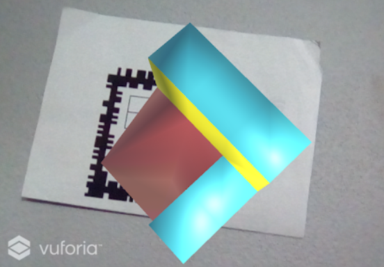
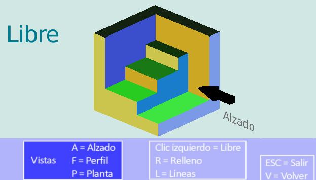
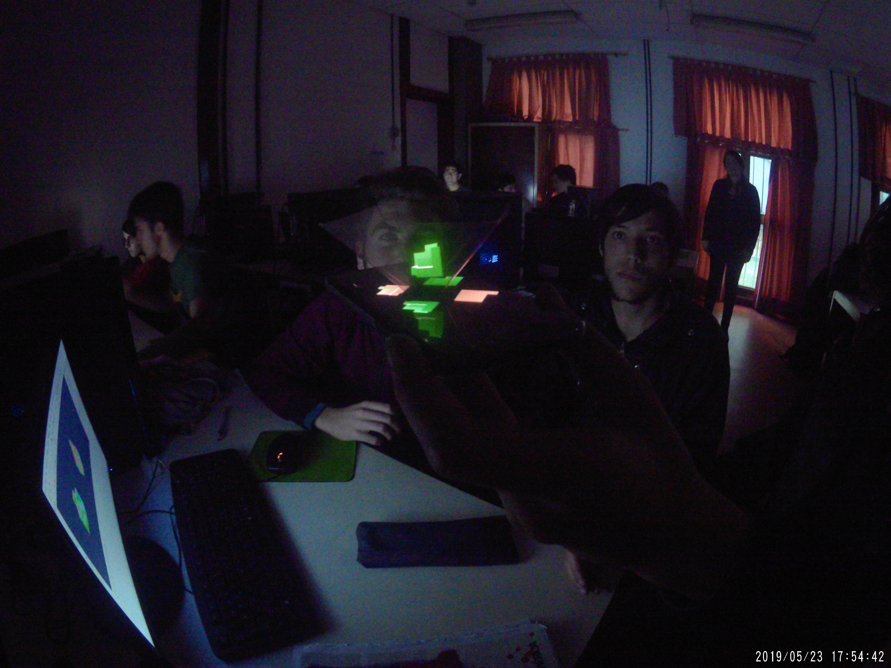

Servicios
El LCG ofrece distintos tipos de servicios a instituciones públicas y privadas.
Desarrollo de Proyectos
Desarrollo de Proyectos
El Laboratorio de Computación Gráfica desarrolla todo tipo de proyectos relacionados con el mundo de la industria, la investigación académica o médica.
Los proyectos industriales se relacionan con las áreas del modelado y diseño, la arquitectura (museografía y patrimonio cultural), el deporte (entrenador virtual), la salud (terapias físicas), y la ergonomía de las interfaces humano computadoras.
Los proyectos de investigación académica exploran los temas de la presencia, la navegación y la interconexión en ambientes virtuales y estudian en forma general el comportamiento de los humanos en situaciones inmersivas.
Provisión de Recursos Materiales


Computer Assisted Virtual Environment – CAVE
Ambiente inmersivo tipo CAVE (Computer Assisted Virtual Environment) construido y desarrollado en la UNSL. El ambiente puede utilizarse para la realización de revisiones de proyectos a escala 1:1 (arquitectónica, automotriz, aeronáutica, patrimonio cultural, …) con o sin desarrollo de infografía y / o desarrollo informático.
- Estructura: soporte metálico para distribuir en forma envolvente 3 pantallas retroproyectadas de 3mts de ancho y 3mts de alto c/u.
- Hardware: CPU de altas prestaciones INTEL i7-7700K, 16GB DDR4, ASUS Nvidia GTX 1070. Proyectores de alta resolución y de distancia ultra corta DELL S500.
- Software: Librería Gráfica Libre OPENGL, Motor de Renderizado Gráfico Orientado a Objeto OGRE3D.

Impresoras 3D
Modelo Prusa i3: área de impresión 20x20x20cm, Material de impresión ABS, PLA, FLEX


Scanner 3D

Computadoras de Alta Performance
- 8 PC equipadas con hardware dedicado a las aplicaciones gráficas de tiempo real

Monitores 3D


Proyectores de alta resolución de distancia ultra corta


Lentes 3D activos


Casco de visualización 3D


Simulador de manejo


Guantes de datos
- 5 bend sensors with 12 bit ADC for accurate finger movements tracking;
- embedded gyroscopes, accelerometer and magnetomer for complete hand attitude trackig;
- USB and WiFi interface
- Battery powered (only WiFi version)
- Low power, up to 5 hours of operations with full charger battery
- Complete SDKs for custom application developmen


Sensor de movimiento de brazo


Sensor de movimiento corporal


Sensor de movimiento manos
Consultoría y experticia
Un equipo de ingenieros expertos en desarrollo de computadora 3D en tiempo real está disponible para satisfacer las necesidades en aplicaciones tales como:
- Estudio de viabilidad de soluciones de realidad virtual
- Visualización y Simulación
- Impresión y escaneo 3D
- Interacción Humano-Computadora
- Interacción en un entorno inmersivo (Navegación por entorno virtual, Selección y manipulación de objetos, Control de aplicaciones)
- Captura de Movimientos
- Modelado, Animación y diseño
- Desarrollo de aplicaciones y herramientas de usuario
REA útiles
AR4AXO: Es una aplicación de Realidad Aumentada para practicar el paso del sistema Triédrico al Axonométrico.

DescargarVR4Tri: Es una aplicación de Realidad Virtual No Inmersiva para practicar y corroborar la realización del sistema Triédrico.

Descargar3D4TriAxo: Es una herramienta que utiliza técnicas holográficas a fin de lograr la ilusión óptica de recrear un objeto virtual en el mundo real. Para el uso de los recursos se requiere la construcción de una pirámide truncada en vidrio o plástico transparente.

Descargar recursosPolíticas de privacidad
Políticas de Privacidad
El Laboratorio de Computación Gráfica (LCG) proporciona esta Política de Privacidad para ayudar a explicar nuestras prácticas de recopilación de información en nuestras aplicaciones para dispositivos móviles. Esta Política de Privacidad se emplea en todas nuestras aplicaciones a menos que se indique lo contrario.
Nuestras aplicaciones para dispositivos móviles no tienen un costo para su descarga o uso.
¿Qué información obtiene la aplicación y cómo se utiliza?
Las aplicaciones con tecnología de Realidad Aumentada requieren el uso de la cámara del dispositivo para reconocer los diferentes marcadores, y así poder cargar el contenido virtual (sea video, imágenes, modelos 3D, audio, etc.). Por esto se solicita el permiso de “Uso de la cámara” en las aplicaciones.
Retención de datos
Las aplicaciones no recolectan ni mantienen información confidencial ni personal como pueden ser el ID del teléfono, contactos, contraseñas ni ubicación entre otras. Cuando alguna de nuestras aplicaciones tenga la función de realizar capturas de pantalla o tomar fotografías estas serán almacenadas en el dispositivo del usuario (es decir, de forma local) sin que el Laboratorio de Computación Gráfica tenga acceso a ellas, en consecuencia no se envía esta información a nuestros servidores. Por estas razones, el Laboratorio de Computación Gráfica no tiene las facultades de distribuir datos personales de los usuarios que hacen uso de sus aplicaciones.
Cambios
Esta Política de Privacidad puede ser actualizada sin previo aviso. Se recomienda revisar esta página periódicamente para comprobar algún cambio. Al utilizar nuestras aplicaciones se considera que el usuario conoce y acepta nuestra Política de Privacidad, el uso continuo se considera la aprobación de todos los cambios. Estos cambios son efectivos inmediatamente después de su publicación en esta página.
Otros
Algunas de nuestras aplicaciones están hechas con Unity y/o utilizan Vuforia.
Unity cuenta con sus propias políticas de privacidad. Pueden ser revisadas en el siguiente enlace:
https://unity3d.com/es/legal/privacy-policy
Vuforia tiene sus propios términos y políticas de privacidad. En el siguiente enlace se describe qué tipo de datos recolecta con fines estadísticos:
https://developer.vuforia.com/legal/vuforia-6-statistics
Contáctenos
Si tiene alguna pregunta o sugerencia sobre nuestra Política de Privacidad, no dude en ponerse en contacto con nosotros por correo electrónico a lcg.unsl@gmail.com